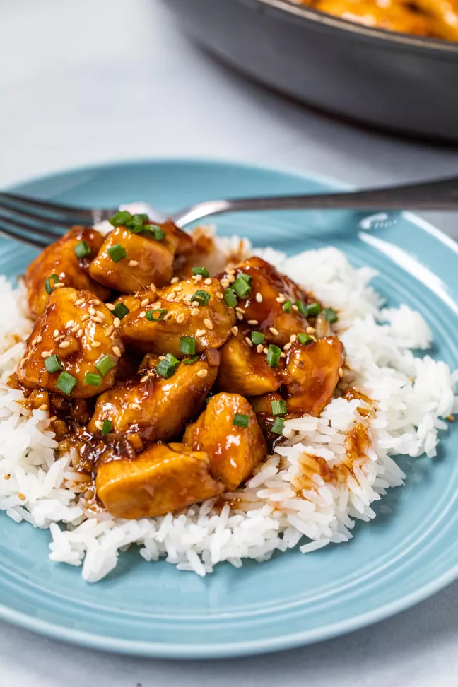

There are so many versions of sauteed chicken with sauce, but this bourbon chicken is one of my favorite iterations of that idea. It’s easy to make, flexible enough to use any cut of chicken you have on hand (use cubed thighs or breast), and the bourbon sauce is so good you’ll want to eat it with a spoon straight out of the skillet.
The trick to making this dish the best it can be is by making sure you have plenty of sauce. You want it to coat the chicken and have more than enough to drizzle over the rice as well.
Cook the rice:
Place the rice in a wire mesh sieve or strainer and rinse under cold water for about a minute. In a medium saucepan add the rice and 1 3/4 cups of water.
Cover the rice and bring it to a boil over medium heat. Once it comes to a boil, 4-5 minutes, reduce the heat to medium low and let the rice cook for about 10 minutes.
After 10 minutes remove from heat and keep the lid on for 10 additional minutes. When ready fluff it with a fork.
Cut the chicken into 1-inch cubes. In a large bowl add cubed chicken and season with salt. Toss with the cornstarch to fully coat all of the chicken pieces.
In a large non-stick skillet set over medium heat, add the oil. Once the oil is hot, add the chicken and cook, stirring occasionally, until chicken is starting to brown and is mostly cooked through, about 8 minutes.
It’s okay if it’s not entirely cooked through at this point because it will continue to cook in the sauce. Remove the chicken from the skillet and set aside on a plate.
In a medium bowl combine the garlic, ginger, chicken stock, bourbon, soy sauce, brown sugar, and apple cider vinegar. Add the sauce to the same skillet where you cooked the chicken and set over medium heat. Bring to a simmer, 2-3 minutes.
Once the sauce is simmering, add the chicken back into the skillet with sauce and bring to a boil. At this point, you can increase the heat slightly to speed up the process but be careful as the sauce can burn if you raise the heat too much.
Reduce the heat to low and simmer the sauce until it has thickened and coats the chicken well, 6 to 8 minutes. The finished sauce should glaze the chicken well and coat the back of a spoon.
Serve the bourbon chicken immediately over rice. Garnish with chives and sesame seeds.
If you have leftovers, you can store the chicken in the fridge for up to 5 days or freeze it for up to 3 months. Reheat bourbon chicken in the microwave with a splash of water or gently in a pot or skillet with a splash of water.